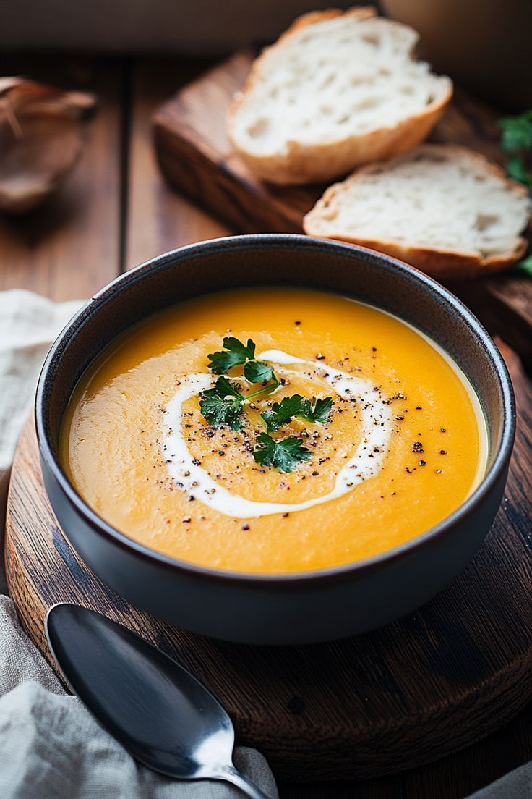

Sopa Cremosa de Abóbora
Uma sopa deliciosa, cremosa e perfeita para o outono. Combina o sabor adocicado da abóbora com especiarias leves, deixando a refeição aconchegante e nutritiva.

Ingredientes
Rende 4 porções
- 500g de abóbora descascada e cortada em cubos
- 1 cebola média picada
- 2 dentes de alho picados
- 500ml de caldo de legumes ou água
- 200ml de creme de leite
- 2 colheres de sopa de azeite
- Sal e pimenta a gosto
- Noz-moscada ralada a gosto
Modo de Preparo
Tempo estimado: 30 minutos
- Em uma panela, aqueça o azeite e refogue a cebola e o alho até ficarem macios.
- Adicione a abóbora em cubos e refogue por alguns minutos.
- Acrescente o caldo de legumes, tampe a panela e cozinhe até a abóbora ficar macia.
- Bata a sopa no liquidificador até obter um creme homogêneo.
- Volte o creme à panela, adicione o creme de leite e tempere com sal, pimenta e noz-moscada.
- Aqueça por mais alguns minutos em fogo baixo e sirva quente.
Dica do Chef: Para um toque especial, adicione uma colher de chá de gengibre ralado junto com o alho. Isso dará um sabor único à sua sopa!